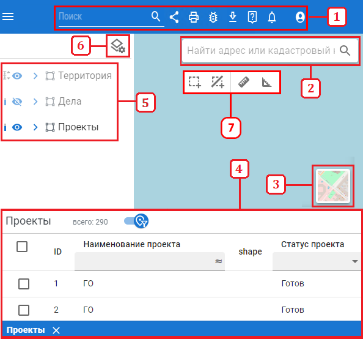

Карта
Управление пространственными данными
«Карта» — это страница работы с картографическими данными в проекте. На ней можно визуализировать слои и
взаимодействовать с ними.
«Карта» содержит инструменты:
- Полнотекстовый поиск в проекте, копирование ссылки, печать, поиск ошибок, выгрузка GML, справка, уведомления.
- Поиск по адресу или кадастровому номеру.
- Выбор подложки.
- Атрибутивная таблица.
- Слои проекта.
- Кнопка "Настроить слои проекта".
- Измерение объектов.
- Выбор объектов и очистка выделенных объектов(очистку объектов можно произвести дважды нажав "Esc")
